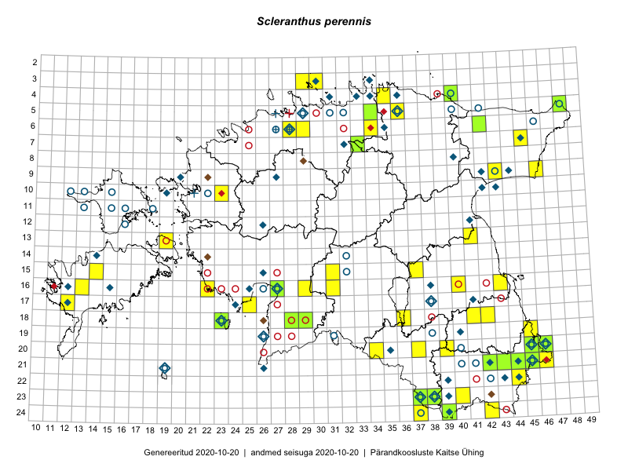

Scleranthus perennis
Uuendatud: 2016-12-08
Kaardile koondatud taksonid: Scleranthus perennis L.

Kaart põhineb 52 kirjel, neist vaatlusi 49 ja eksemplare 3. Taksonit on leitud 40 ruudust.
| Ruut | Vaatleja(d) | Vaatlusaeg | Kirje tüüp | Viide andmebaasikirjele |
|---|---|---|---|---|
| 21-45 | Toomas Kukk | 2015-06-23T14:30Z | ruut/ala | vaata PlutoFis |
| 21-45 | Toomas Kukk | 2015-06-23 | punkt | vaata PlutoFis |
| 21-45 | Toomas Kukk, Kersti Tambets, Sten Mander, Janika Sammasto, Timo Luhamäe | 2014-07-30 | ruut/ala | vaata PlutoFis |
| 21-46 | Rein Kalamees, Kersti Püssa | 2015-08-11 | ruut/ala | vaata PlutoFis |
| 21-45 | Rein Kalamees, Kersti Püssa | 2015-07-15 | ruut/ala | vaata PlutoFis |
| 20-46 | Rein Kalamees, Kersti Püssa | 2015-07-16 | ruut/ala | vaata PlutoFis |
| 21-45 | Toomas Kukk, Timo Luhamäe, Kersti Tambets, Sten Mander, Janika Sammasto | 2014-07-30 | ruut/ala | vaata PlutoFis |
| 07-33 | Jana-Maria Habicht, Ester Valdvee | 2015-05-29 | ruut/ala | vaata PlutoFis |
| 16-22 | Indrek Tammekänd, Jaak Tammekänd, Raivo Endrekson | 2015-06-01 | punkt | vaata PlutoFis |
| 19-45 | Thea Kull, Meeli Mesipuu | 2015-08-19 | ruut/ala | vaata PlutoFis |
| 05-48 | Meeli Mesipuu, Timo Luhamäe | 2015-07-23 | ruut/ala | vaata PlutoFis |
| 23-38 | Eeva-Maria Jeletsky, Tarmo Niitla | 2015-07-17 | ruut/ala | vaata PlutoFis |
| 23-40 | Eeva-Maria Jeletsky, Tarmo Niitla | 2015-08-05 | ruut/ala | vaata PlutoFis |
| 17-12 | Mari Reitalu | 2015-06-07 | ruut/ala | vaata PlutoFis |
| 13-19 | Meeli Mesipuu, Kadri Tali | 2015-06-24 | ruut/ala | vaata PlutoFis |
| 16-13 | Mari Reitalu, Oliver Parrest | 2015-07-27 | ruut/ala | vaata PlutoFis |
| 18-28 | Meeli Mesipuu, Timo Luhamäe | 2015-06-09 | ruut/ala | vaata PlutoFis |
| 16-15 | Karin Kikas, Elle Rajandu | 2015-07-20 | ruut/ala | vaata PlutoFis |
| 18-36 | Helle Mäemets, Mare Leis | 2015-06-24 | ruut/ala | vaata PlutoFis |
| 21-45 | Kersti Püssa, Rein Kalamees | 2015-08-05 | ruut/ala | vaata PlutoFis |
| 20-45 | Kersti Püssa, Rein Kalamees | 2015-07-16 | ruut/ala | vaata PlutoFis |
| 04-40 | Kaili Orav, Silvia Pihu | 2015-07-21 | ruut/ala | vaata PlutoFis |
| 03-30 | Mari Reitalu, Tõnu Ploompuu, Ott Luuk, Peedu Saar | 2014-06-01 | ruut/ala | vaata PlutoFis |
| 03-29 | Ott Luuk, Mari Reitalu, Tõnu Ploompuu | 2014-06-01 | ruut/ala | vaata PlutoFis |
| 06-28 | Tõnu Ploompuu | 2015-06-06 | ruut/ala | vaata PlutoFis |
| 10-23 | Sirje Lagle, Tõnu Ploompuu | 2015-05-15 | ruut/ala | vaata PlutoFis |
| 13-41 | Kai Rünk, Ülle Jõgar, Illi Tarmu | 2016-06-10T12:00Z | ruut/ala | vaata PlutoFis |
| 21-45 | Toomas Kukk, Tiit Hallikma, Johannes Kõdar | 2016-06-14 | ruut/ala | vaata PlutoFis |
| 24-42 | Rein Kalamees, Eerik Leibak | 2016-06-14 | ruut/ala | vaata PlutoFis |
| 23-38 | Rein Kalamees, Eerik Leibak | 2016-06-16 | ruut/ala | vaata PlutoFis |
| 20-39 | Rein Kalamees, Eerik Leibak | 2016-06-17 | ruut/ala | vaata PlutoFis |
| 20-34 | Silvia Pihu, Illi Tarmu | 2015-07-13 | ruut/ala | vaata PlutoFis |
| 21-46 | Meeli Mesipuu, Timo Luhamäe | 2016-06-14 | punkt | vaata PlutoFis |
| 16-31 | Meeli Mesipuu | 2016-06-23 | punkt | vaata PlutoFis |
| 18-41 | Vivika Väli, Ülo Väli | 2015-07-31 | ruut/ala | vaata PlutoFis |
| 23-37 | Maret Gerz, Liina Oja | 2016-06-15 | ruut/ala | vaata PlutoFis |
| 24-37 | Maret Gerz, Liina Oja | 2016-06-15 | ruut/ala | vaata PlutoFis |
| 20-37 | Maret Gerz, Liina Oja | 2016-06-16 | ruut/ala | vaata PlutoFis |
| 05-36 | Tõnu Ploompuu, Eerik Leibak | 2016-07-27 | ruut/ala | vaata PlutoFis |
| 21-46 | Timo Luhamäe, Meeli Mesipuu | 2016-06-14 | ruut/ala | vaata PlutoFis |
| 18-23 | Karin Kaljund, Kaire Lanno, Indrek Melts | 2016-07-27 | ruut/ala | vaata PlutoFis |
| 09-46 | Meeli Mesipuu, Karin Kikas | 2016-08-31 | ruut/ala | vaata PlutoFis |
| 16-27 | Tiit Hallikma, Tõnu Ploompuu | 2016-06-20 | ruut/ala | vaata PlutoFis |
| 09-43 | Rein Kalamees, Kersti Püssa | 2016-06-29 | ruut/ala | vaata PlutoFis |
| 17-25 | Tiit Hallikma, Tõnu Ploompuu | 2016-07-06 | ruut/ala | vaata PlutoFis |
| 06-29 | Kadi-Liis Kesler, Tiina Elvisto | 2015-05-26 | ruut/ala | vaata PlutoFis |
| 16-43 | Meeli Mesipuu | 2016-09-02 | ruut/ala | vaata PlutoFis |
| 20-45 | Jaak-Albert Metsoja, Mari Metsoja | 2016-06-14 | ruut/ala | vaata PlutoFis |
| 22-44 | Jaak-Albert Metsoja, Mari Metsoja | 2016-06-15 | ruut/ala | vaata PlutoFis |
| 07-33 | Jana-Maria Habicht | 2015-05-29 | eksemplar | vaata PlutoFis |
| 23-37 | Maret Gerz, Liina Oja | 2016-06-15 | eksemplar | vaata PlutoFis |
| 21-44 | Peedu Saar, Karin Kikas | 2016-08-18 | eksemplar | vaata PlutoFis |